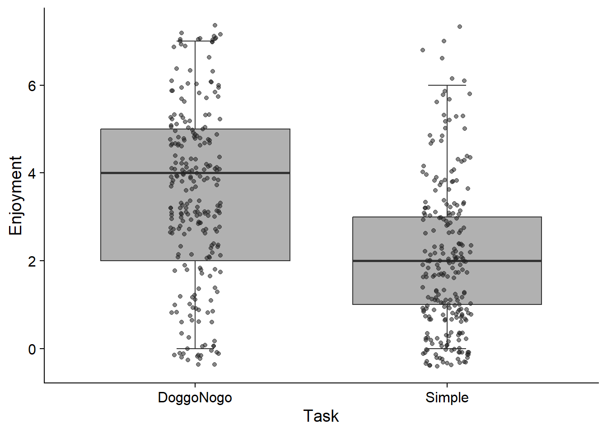

i small moderate large
1 mean NA 0.110 0.890
2 median NA 0.149 0.851
3 mode NA 0.731 0.269
4 sd 0.058 0.935 0.007
5 mad 0.038 0.936 0.026
6 iqr 0.056 0.929 0.015
set.seed(123)# Hypothesis 2: The gamified version will be more engaging than the non-gamified version.## Higher ratings of task enjoyment for the gamified version.## RT variability (e.g., SD(RTs)) should be lower for the gamified version.tdat <- df |> dplyr::select(Assessment_Enjoyment_DoggoNogo, Assessment_Enjoyment_Simple, Participant) |> tidyr::pivot_longer(cols =c("Assessment_Enjoyment_DoggoNogo", "Assessment_Enjoyment_Simple"), names_to ="Task", values_to ="Enjoyment") |> dplyr::mutate(Task = stringr::str_remove(Task, "Assessment_Enjoyment_"))t_means <- tdat |> dplyr::group_by(Task) |> dplyr::summarise(mean =round(mean(Enjoyment, na.rm = T), 2),sd =round(sd(Enjoyment, na.rm = T), 2))bf_t <- BayesFactor::ttestBF(formula = Enjoyment ~ Task, data = tdat)bf_t_rep <-round(BayesFactor::extractBF(bf_t)$bf, 2)t_dat <-effectsize(bf_t, test ="all") |>data.frame()# Reporting of resultspaste0("A Bayesian t-test was conducted using `ttestBF` from the BayesFactor package [@BayesFactor], using default priors ($\\sqrt{2}/2$) to compare the hypothesis that there are differences in enjoyment ratings between the simple SRT and the gamified (DoggoNogo) version of the SRT ($H_1$), and the null hypothesis, that no such difference exists ($H_0$). Overall, ", t_means[t_means$mean ==max(t_means$mean),]$Task," received higher enjoyment scores (M = ",max(t_means$mean),", SD = ", t_means[t_means$mean ==max(t_means$mean),]$sd,") than ", t_means[t_means$mean ==min(t_means$mean),]$Task," (M = ",min(t_means$mean),", SD = ", t_means[t_means$mean ==min(t_means$mean),]$sd,"). The result, $\\delta$ = ",round(t_dat$Cohens_d, 2),", 95% CI [",round(t_dat$CI_low, 2), ", ",round(t_dat$CI_high, 2),"], $BF_{10} = ",convert_to_words(bf_t_rep)," indicates ", effectsize::interpret_bf(bf_t_rep)," $H_1$ which is ",ifelse(bf_t_rep >3, "sufficient", "insufficient")," to discard $H_0$ in favour of $H_1$. The distribution of enjoyment ratings by task can be seen in FIGURE.")
[1] "A Bayesian t-test was conducted using `ttestBF` from the BayesFactor package [@BayesFactor], using default priors ($\\sqrt{2}/2$) to compare the hypothesis that there are differences in enjoyment ratings between the simple SRT and the gamified (DoggoNogo) version of the SRT ($H_1$), and the null hypothesis, that no such difference exists ($H_0$). Overall, DoggoNogo received higher enjoyment scores (M = 3.49, SD = 1.93) than Simple (M = 2, SD = 1.71). The result, $\\delta$ = 0.8, 95% CI [0.62, 0.99], $BF_{10} = 532.3T indicates extreme evidence in favour of $H_1$ which is sufficient to discard $H_0$ in favour of $H_1$. The distribution of enjoyment ratings by task can be seen in FIGURE."
Code
# Distribution of ratingstdat |> ggplot2::ggplot(aes(x = Task, y = Enjoyment)) + ggplot2::geom_boxplot(staplewidth =0.2, outliers = F, fill ="#646464", alpha =0.5) + ggplot2::geom_point(position =position_jitter(width =0.1), aes(alpha =0.5), show.legend = F, colour ="#232323") + cowplot::theme_cowplot()

Code
sddat <-merge( df_dog |> dplyr::filter(Valid_Trial) |> dplyr::group_by(Participant) |> dplyr::summarise(DoggoNogo =sd(RT)), df_srt |> dplyr::group_by(Participant) |> dplyr::summarise(SRT =sd(RT))) |> tidyr::pivot_longer(cols =c(DoggoNogo, SRT), names_to ="Task", values_to ="SD") # Standard deviation of reaction timest_means2 <- sddat |> dplyr::group_by(Task) |> dplyr::summarise(mean =round(mean(SD, na.rm = T), 2),sd =round(sd(SD, na.rm = T), 2))bf_t2 <- BayesFactor::ttestBF(formula = SD ~ Task, data = sddat)bf_t_rep2 <-round(BayesFactor::extractBF(bf_t2)$bf, 2)t_dat2 <-effectsize(bf_t2, test ="all") |>data.frame()# Reporting of resultspaste0("A Bayesian t-test was conducted using `ttestBF` from the BayesFactor package [@BayesFactor], using default priors ($\\sqrt{2}/2$) to compare the hypothesis that there are differences in RT SDs between the simple SRT and the gamified (DoggoNogo) version of the SRT ($H_1$), and the null hypothesis, that no such difference exists ($H_0$). Overall, ", t_means2[t_means2$mean ==max(t_means2$mean),]$Task," received larger RT SDs (M = ",max(t_means2$mean),", SD = ", t_means2[t_means2$mean ==max(t_means2$mean),]$sd,") than ", t_means2[t_means2$mean ==min(t_means2$mean),]$Task," (M = ",min(t_means2$mean),", SD = ", t_means2[t_means2$mean ==min(t_means2$mean),]$sd,"). The result, $\\delta$ = ",round(t_dat2$Cohens_d, 2),", 95% CI [",round(t_dat2$CI_low, 2), ", ",round(t_dat2$CI_high, 2),"], $BF_{10} = ",convert_to_words(bf_t_rep2)," indicates ", effectsize::interpret_bf(bf_t_rep2)," $H_1$ which is ",ifelse(bf_t_rep2 >3, "sufficient", "insufficient")," to discard $H_0$ in favour of $H_1$. The distribution of SDs by task can be seen in FIGURE.")
[1] "A Bayesian t-test was conducted using `ttestBF` from the BayesFactor package [@BayesFactor], using default priors ($\\sqrt{2}/2$) to compare the hypothesis that there are differences in RT SDs between the simple SRT and the gamified (DoggoNogo) version of the SRT ($H_1$), and the null hypothesis, that no such difference exists ($H_0$). Overall, DoggoNogo received larger RT SDs (M = 0.07, SD = 0.02) than SRT (M = 0.06, SD = 0.01). The result, $\\delta$ = 0.66, 95% CI [0.48, 0.85], $BF_{10} = 11.9B indicates extreme evidence in favour of $H_1$ which is sufficient to discard $H_0$ in favour of $H_1$. The distribution of SDs by task can be seen in FIGURE."